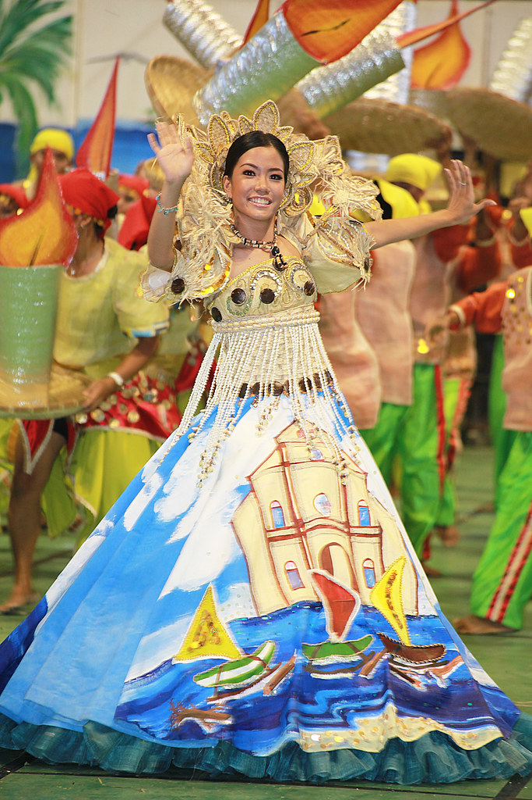

Noting the wealth of springs in this area, the Spaniards named it ‘Land of Sibuls’ which meant land of numerous springs. Influence of time, as well as elements of change, got the name of this municipality modified to Sibulan, its present name. In 1838, this town became a Parish under secular order. In 1856, the parish was occupied by a regular church priest. Then, in 1910, Sibulan had its initial set of municipal government officials once it became a municipality. This was in accordance to Act No. 82 of the Philippine Commission dated January 31, 1910. Macario Literal was the first appointed municipal mayor.
| Bagtic Public School (Tubod) | Calabnugan Elementary School |
| Cangmating Elementary School | Calinawan Elementary School |
| Balugo Elementary School | Cantalawan Elementary School |
| Lo-oc Elementary School | Magsaysay Memeorial Elementary School |
| Maningcao Elementary School | San Antonio Elementary School |
| Sibulan Central Elementary School | Tubtubon Elementary School |
| Bolocboloc Elementary School | Cambajao Elementary School |
| Escaguit Elementary School | Magatas Elementary School |
| Maslog Elementary School | Tubigon Elementary School |
| Libertad Ong Calderon Memeorial ES (Ajong Elementary School) |
| Ajong High School North National Highway Ajong Negros Oriental | Maningcao National High School Maningcao, Sibulan |
| Bolocboloc High School Bolocboloc , Sibulan | San Antonio National High School San Antonio, Negros Oriental |
| Enrique Villanueva High School Tubod, Enrique Villanueva Sibulan |

Sibulan has the majority of golf courses in Negros Oriental including San Antonio Golf Course. The tourist attraction of all Sibulan attractions is the Twin-Lakes of Danao and Balinsasayaw, which are both a community managed the natural resource. It is home to an extensive biodiversity and ecosystem. Another visit-worthy attraction is the Mama Mary Our Lady’s Garden. Activities in this area include swimming, boating, fishing, kayaking and trekking. The main institutional landmarks in Sibulan are its symmetrical municipal hall, the only airport of Negros Oriental, the Airport and the Senior San Antonio de Padua Church, an imposing building that attracts devotees from all over Negros Oriental, specially during the festival and holiday season. Other interesting landmarks include the AngTay Golf Course, and the Looc Memorial Shrine which is the spot of the initial encounter of World War 2 in the province of Negros Oriental.
The Yag-Yag Festival is celebrated every last Sunday in April. The festival showcases local culture and arts, unity and fashion.It features street dancing, field presentations, colorful portrayal of coastal marine resources in the barangay and related events.

The Masulog Festival is held every third Sunday of January at Barangay Masulog in order to recount the famous legend of Sulong (the great flood) that periodically laid the old village to waste. It features showdown presentations and street dancing.

The Gapnod Festival is held on June 12 every year and features decorated and lighted boats which carry venerated images as well as devotees in a fluvial procession along the coastal waters of the town. Crowds gather every month on 13th at St. Anthony of Padua to light up candles for this patron saint particularly during his feast day on June 13, whereby a procession is also held. The church grounds are transformed into a lively festive gathering.
Sibulan Municipal Mayor: Jose Ablir “Pepe” Abiera ‘s
Sibulan Municipal Vice Mayor: Derkie Yap Fontelo
Municipal Office: (035) 419 8581
Sibulan Health Center: (035) 419 7535
Sibulan Budget Office: (035) 226 6384
Hospital: Provincial Hospital: (035) 225 9286
Ambulance: 0955 089 4168, 0906 648 3454, or 0936 684 1312
Sibulan Fire Station: (035) 419 5001 or 0917 821 7364
Sibulan Rescue Team: (035) 522 0182
Rescue 613: 0955 933 6875
Disaster Risk Reduction Management (DRRM) tel. (035) 522 0182 or Action Officer Ronilo Duran – 09177239286
Sibulan Police Hotline: 0927 3108 658 or 09273108658; landline (035) 226 6030 or (035) 419 9423
Rural Health Unit: 0955 335 1448 or (035) 523 6004